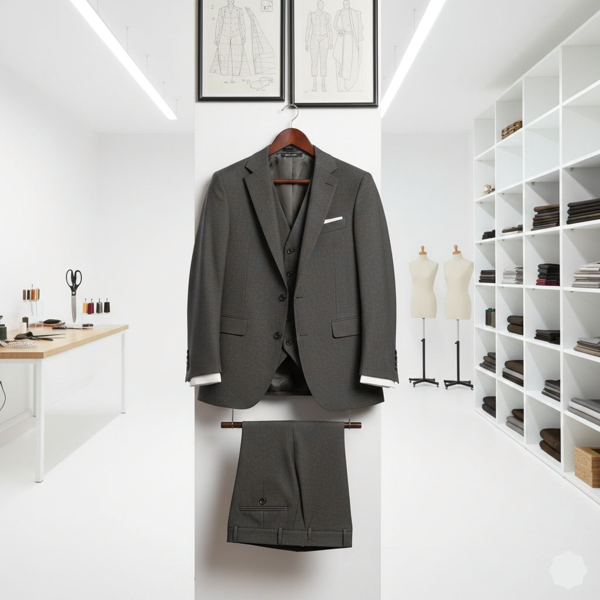
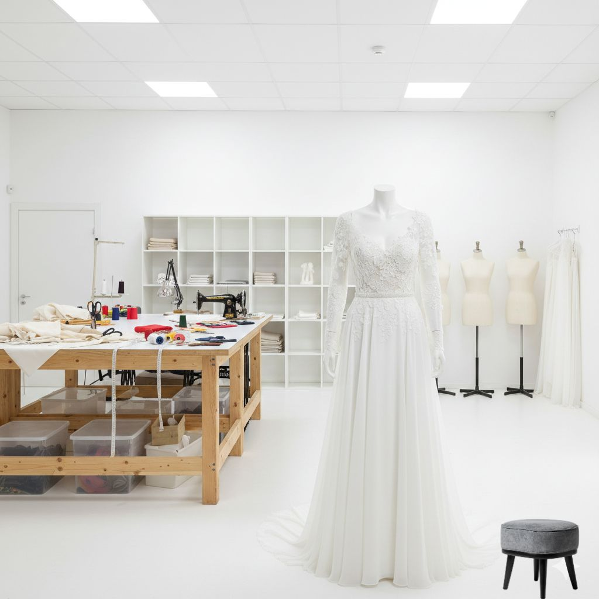

Tailoring Work Examples
Men's Tailoring



Wedding & Special Occasions

Women's Alterations
Have You Used Our Services?
We're always adding more photos of our work. If you're a satisfied customer and would like to share photos of your altered garments (with permission), please contact us!
Contact Us About Photos